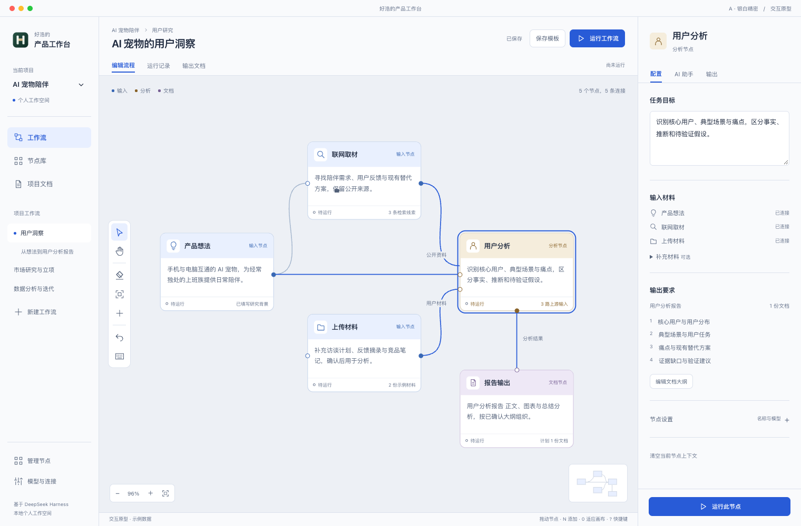
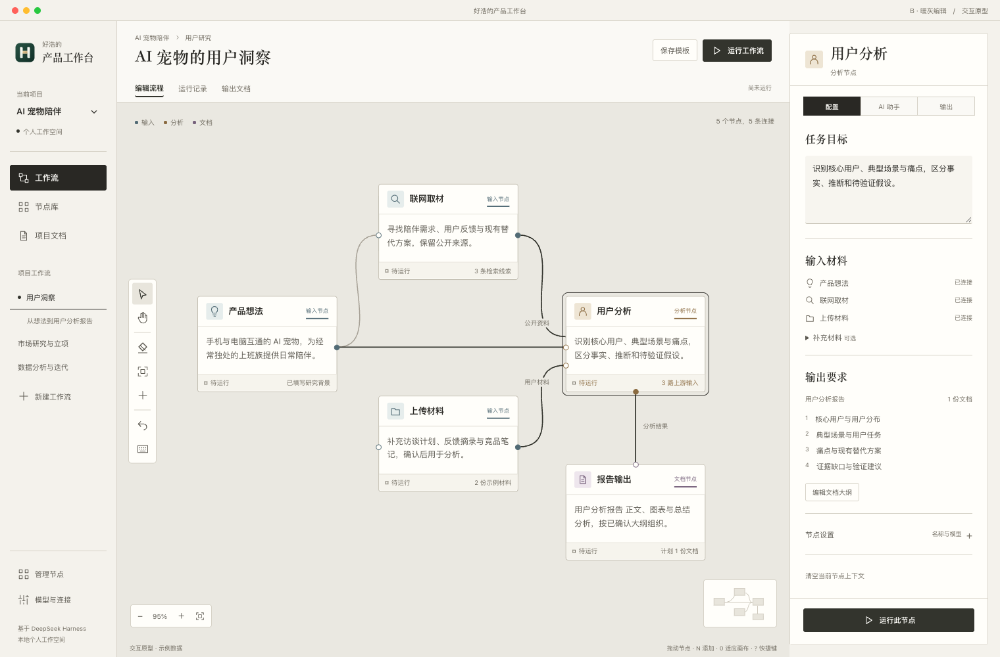
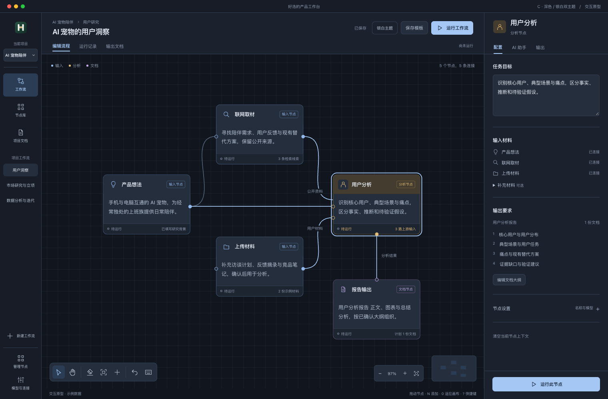

A银白精密清晰、轻盈，适合全天工作的专业编辑器放大查看独立设计系统银白底色与钴蓝焦点，界面更轻、更清晰。标准项目导航与固定配置区，操作位置稳定。节点采用清晰的头身区分，适合高频编辑。打开交互原型 ↗选择 A
B暖灰编辑像一张研究桌，让材料、思考与文档有自己的秩序放大查看独立设计系统纸白任务面板配暖灰画布，强调文字与内容。宋体标题与无衬线正文，形成编辑式层次。节点轮廓更方正，材料分组像研究桌上的文件。打开交互原型 ↗选择 B
C深色专业深色 / 银白双主题，统一布局与操作逻辑放大查看独立设计系统深色覆盖整个工作环境，面板层次更连贯。窄导航轨道和横向工具栏，为画布释放空间。冰蓝操作焦点，三类节点靠色标与文字区分。深色原型 ↗银白原型 ↗选择 C